Candidate List 20260422Previous Day Next Day
Section 1: New Sources (age<1d) Section 2: Old (1-5d) sources observed last nightplaceholder
Section 1: New Afterglow/FBOT Cands Last Night (0)
Section 2: Older Sources Observed Last Night (7)
0. ZTF26aaspkec (Afterglow?FBOT?) [Back to Top] [Share] [Trigger Swift] [Fritz] [Lasair]RA, Dec: 298.01924, 5.89296 19h52m4.62s, 5d53m34.67sGalactic (l, b): 45.26921, -10.64341 ext(g-r) = 0.19


TESS: Sectors [54 81]
PS1: 1 source in 3 arcsec Closest: d = 6.34 arcsec photoz=0.50+/-0.02 peak abs mag = -27.42
LegacySurvey: 0 sources in 3 arcsec

Extinction-corrected gr color:
From alerts: -0.23 +/- 0.05 mag
Rise Rate:
g: 0.27 mag/day
r: -99 mag/day
i: -99 mag/day
Fade Rate:
g: 0.12 mag/day
r: 0.23 mag/day
i: -99 mag/day
1. ZTF26aatbwoo (FBOT?) [Back to Top] [Share] [Trigger Swift] [Fritz] [Lasair]RA, Dec: 274.44519, 34.41778 18h17m46.85s, 34d25m4.01sGalactic (l, b): 61.69777, 21.41778 ext(g-r) = 0.053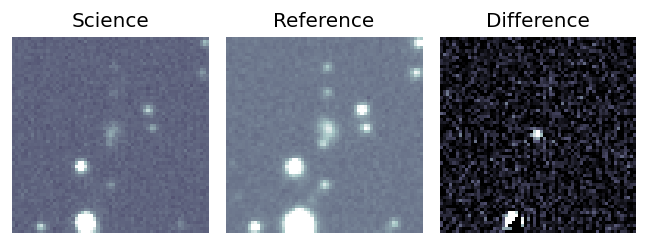
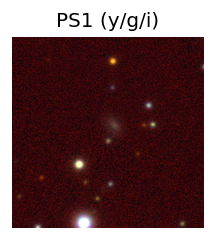
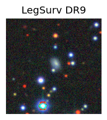
TESS: Sectors [ 26 40 53 54 74 80 118 119]
PS1: 0 sources in 3 arcsec
LegacySurvey: 1 sources in 3 arcsec Closest: d = 0.92 arcsec, 54.9 deg (east of north) photoz=0.23 (68% bounds 0.06, 0.76), type=EXP peak abs mag = -21.38 (68% bounds -18.07, -24.42)
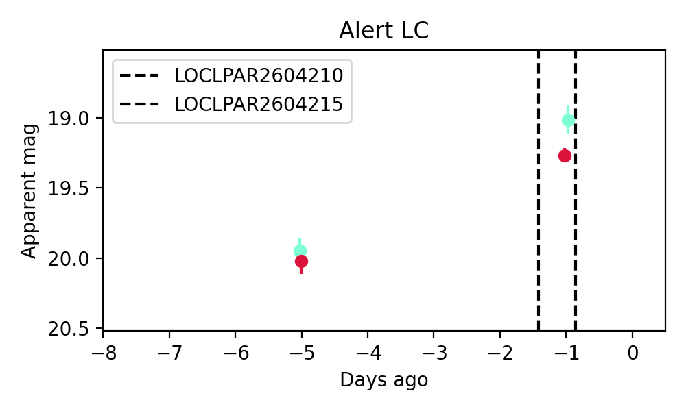
Extinction-corrected gr color:
From alerts: -0.31 +/- 0.12 mag
Rise Rate:
g: 0.23 mag/day
r: 0.19 mag/day
i: -99 mag/day
Fade Rate:
g: -99 mag/day
r: -99 mag/day
i: -99 mag/day
2. ZTF26aatgpqp (Afterglow?) [Back to Top] [Share] [Trigger Swift] [Fritz] [Lasair]RA, Dec: 280.64763, 8.53042 18h42m35.43s, 8d31m49.51sGalactic (l, b): 39.54757, 5.8317 ext(g-r) = 0.723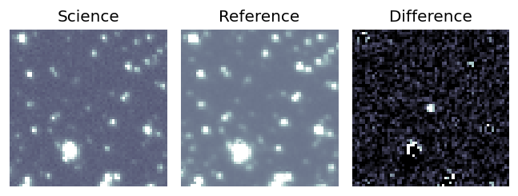
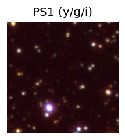

TESS: Sectors [ 80 80 118]
PS1: 1 source in 3 arcsec Closest: d = 3.76 arcsec photoz=0.63+/-0.03 peak abs mag = -24.96
LegacySurvey: 0 sources in 3 arcsec
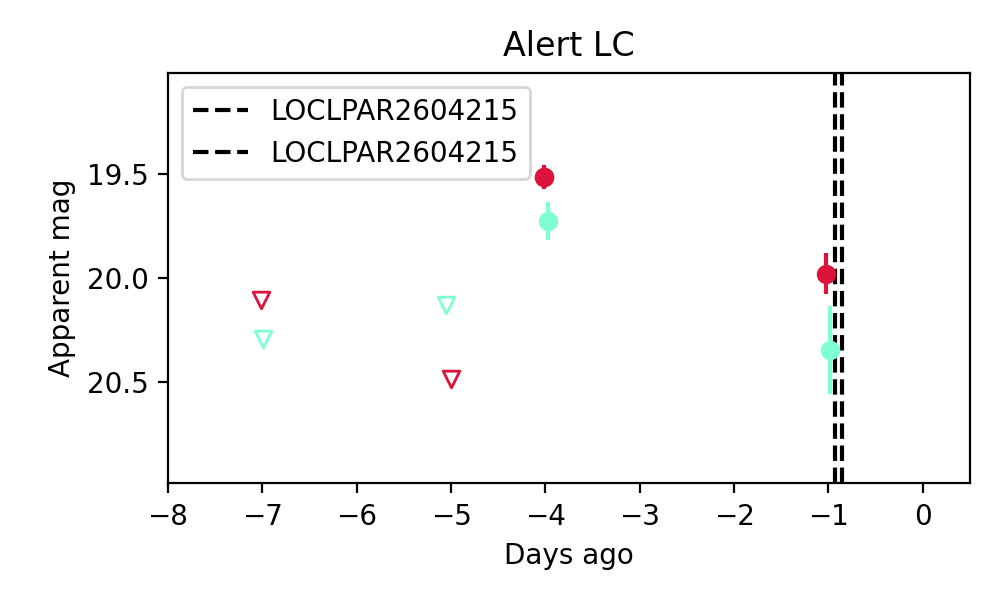
Extinction-corrected gr color:
From alerts: -0.36 +/- 0.23 mag
Rise Rate:
g: 0.37 mag/day
r: 0.98 mag/day
i: -99 mag/day
Fade Rate:
g: 0.21 mag/day
r: 0.15 mag/day
i: -99 mag/day
3. ZTF26aatpqjx (Afterglow?FBOT?) [Back to Top] [Share] [Trigger Swift] [Fritz] [Lasair]RA, Dec: 247.23442, 8.04178 16h28m56.26s, 8d 2m30.42sGalactic (l, b): 23.16914, 35.24621 ext(g-r) = 0.074

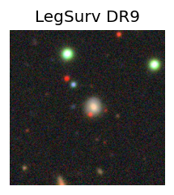
TESS: Sectors 117
SDSS (10 arcsec):Found SDSS phot-z: z=0.16; peak abs mag = -19.93
PS1: 0 sources in 3 arcsec
LegacySurvey: 1 sources in 3 arcsec Closest: d = 1.18 arcsec, 197.1 deg (east of north) photoz=0.12 (68% bounds 0.04, 0.32), type=EXP peak abs mag = -19.06 (68% bounds -16.63, -21.47)

Extinction-corrected gr color:
From alerts: 0.04 +/- 0.17 mag
Extinction-corrected gi color:
From alerts: -0.12 +/- 0.21 mag
Extinction-corrected ri color:
From alerts: -0.16 +/- 0.17 mag
Consistent with synchrotron, g-r>0!
Rise Rate:
g: 0.99 mag/day
r: 0.21 mag/day
i: 0.04 mag/day
Fade Rate:
g: 0.43 mag/day
r: -99 mag/day
i: -99 mag/day
4. ZTF26aattefl (Afterglow?) [Back to Top] [Share] [Trigger Swift] [Fritz] [Lasair]RA, Dec: 250.21949, -1.17156 16h40m52.68s, -1d-10m-17.63sGalactic (l, b): 15.51651, 28.0732 ext(g-r) = 0.179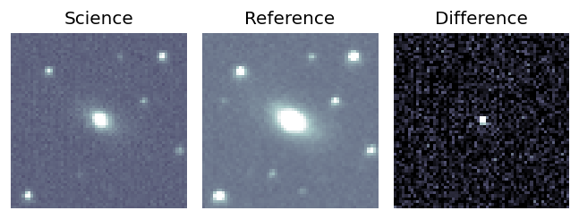
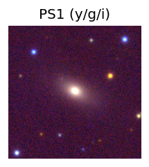

TESS: Sectors 117
SDSS (10 arcsec):Found SDSS phot-z: z=0.08; peak abs mag = -18.97
PS1: 1 source in 3 arcsec Closest: d = 0.08 arcsec photoz=0.07+/-0.00 peak abs mag = -18.56
LegacySurvey: 0 sources in 3 arcsec
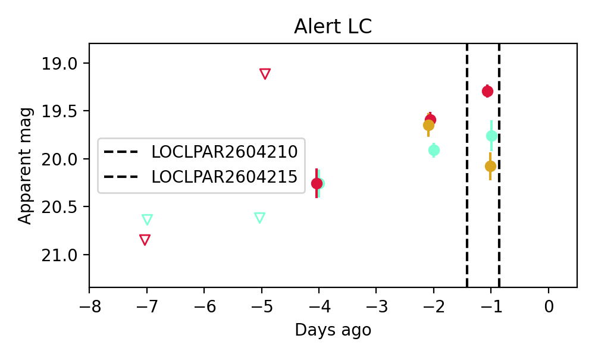
Extinction-corrected gr color:
From alerts: 0.29 +/- 0.18 mag
Extinction-corrected gi color:
From alerts: -0.6 +/- 0.22 mag
Extinction-corrected ri color:
From alerts: -0.88 +/- 0.16 mag
Consistent with synchrotron, g-r>0!
Rise Rate:
g: 0.34 mag/day
r: 0.32 mag/day
i: -99 mag/day
Fade Rate:
g: -99 mag/day
r: -99 mag/day
i: 0.4 mag/day
5. ZTF26aattnom (FBOT?) [Back to Top] [Share] [Trigger Swift] [Fritz] [Lasair]RA, Dec: 304.13479, 56.43107 20h16m32.35s, 56d25m51.84sGalactic (l, b): 91.1942, 11.61729 ext(g-r) = 0.348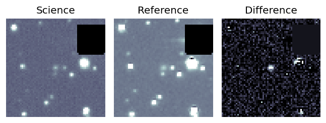
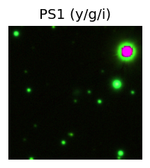

TESS: Sectors [ 14 15 16 41 55 56 57 75 76 77 82 83 84 121]
PS1: 1 source in 3 arcsec Closest: d = 0.31 arcsec photoz=0.16+/-0.02 peak abs mag = -20.67
LegacySurvey: 0 sources in 3 arcsec
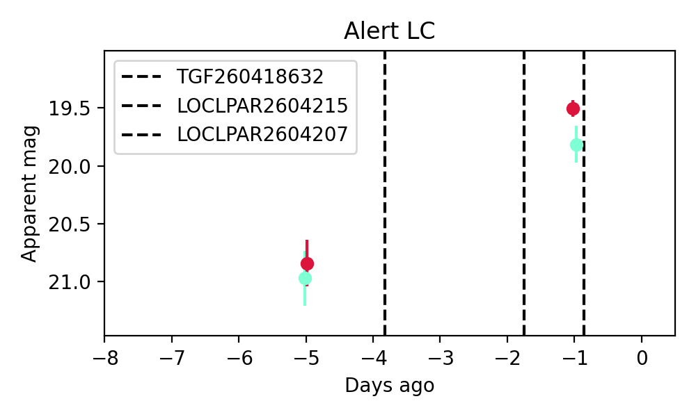
Extinction-corrected gr color:
From alerts: -0.04 +/- 0.17 mag
Consistent with synchrotron, g-r>0!
Rise Rate:
g: 0.28 mag/day
r: 0.34 mag/day
i: -99 mag/day
Fade Rate:
g: -99 mag/day
r: -99 mag/day
i: -99 mag/day
6. ZTF26aattoof (FBOT?) [Back to Top] [Share] [Trigger Swift] [Fritz] [Lasair]RA, Dec: 286.04843, 19.19166 19h 4m11.62s, 19d11m29.98sGalactic (l, b): 51.48713, 5.91988 ext(g-r) = 0.669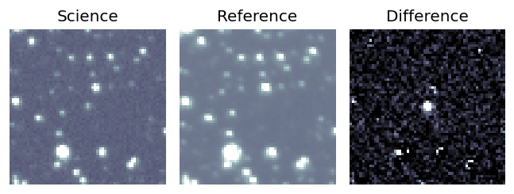
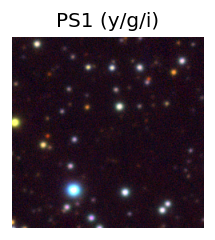
TESS: Sectors [ 40 53 80 81 119]
PS1: 1 source in 3 arcsec Closest: d = 1.18 arcsec photoz=0.65+/-0.03 peak abs mag = -25.41
LegacySurvey: 0 sources in 3 arcsec
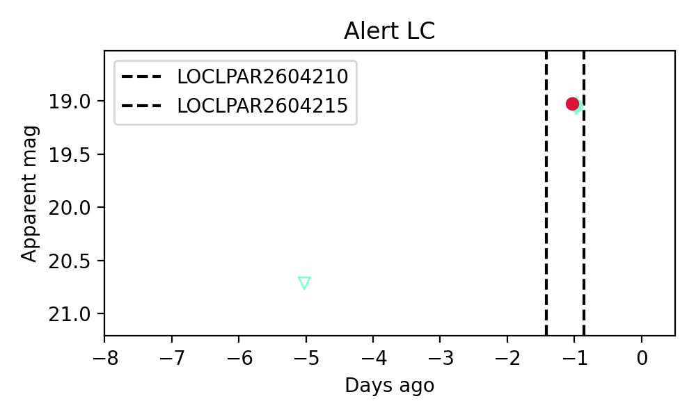
Extinction-corrected gr color:
From alerts: -0.65 +/- 0.09 mag
Rise Rate:
g: 0.41 mag/day
r: 0.07 mag/day
i: -99 mag/day
Fade Rate:
g: -99 mag/day
r: -99 mag/day
i: -99 mag/day